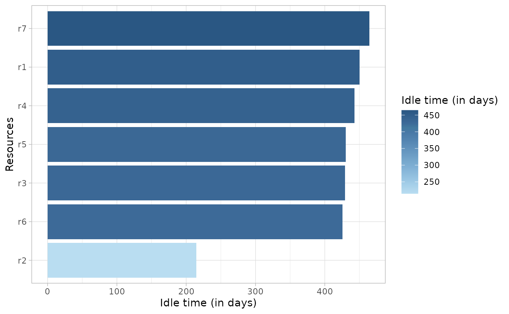
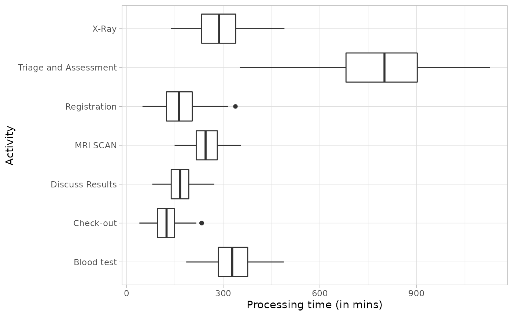
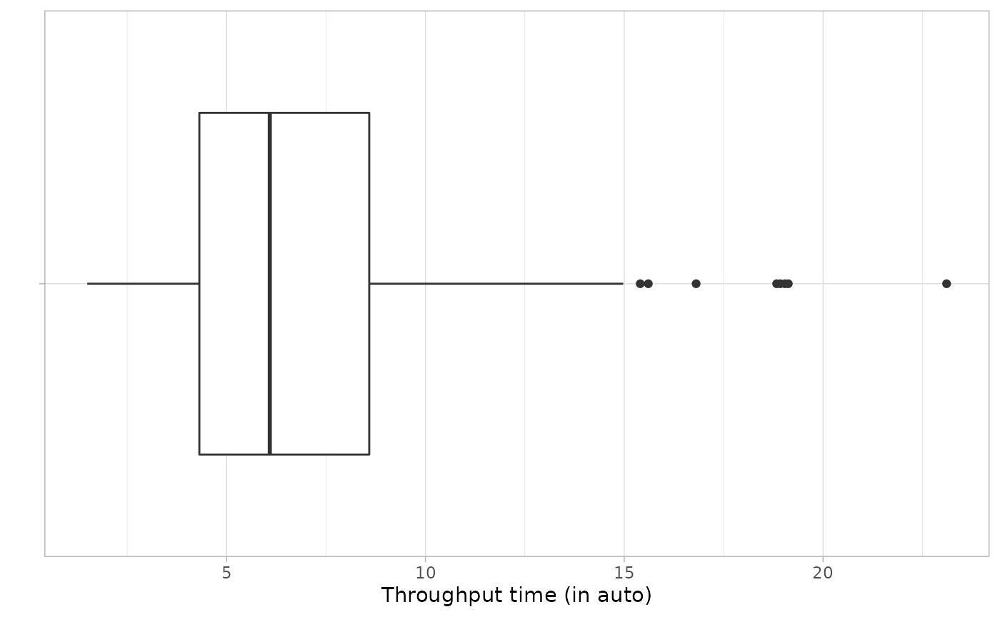
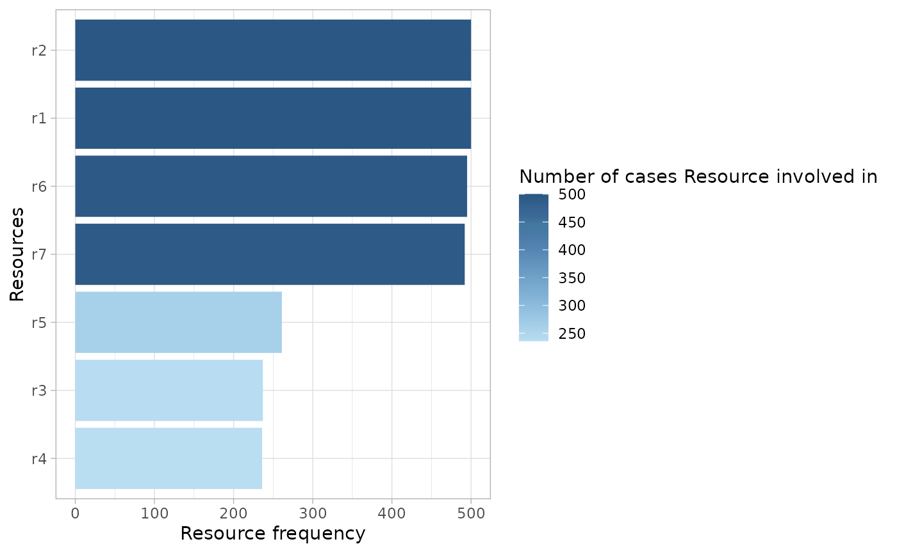
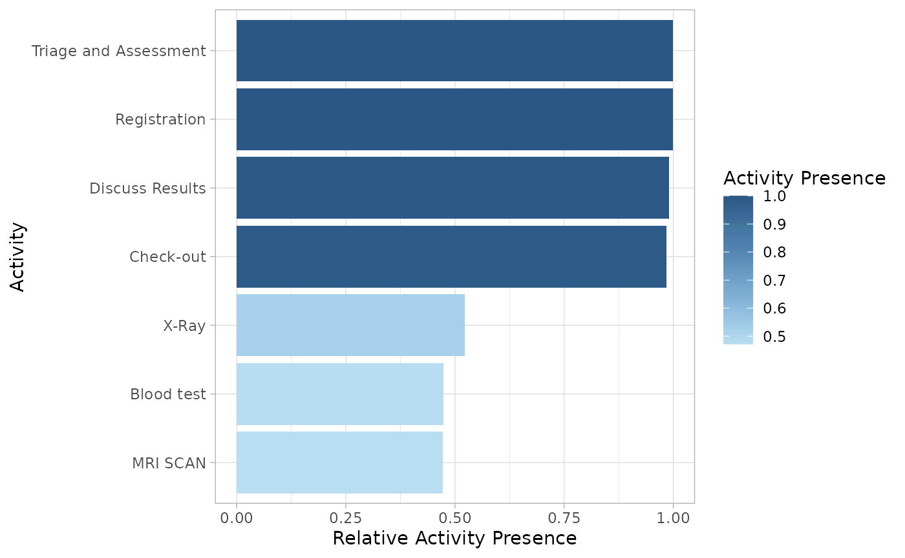
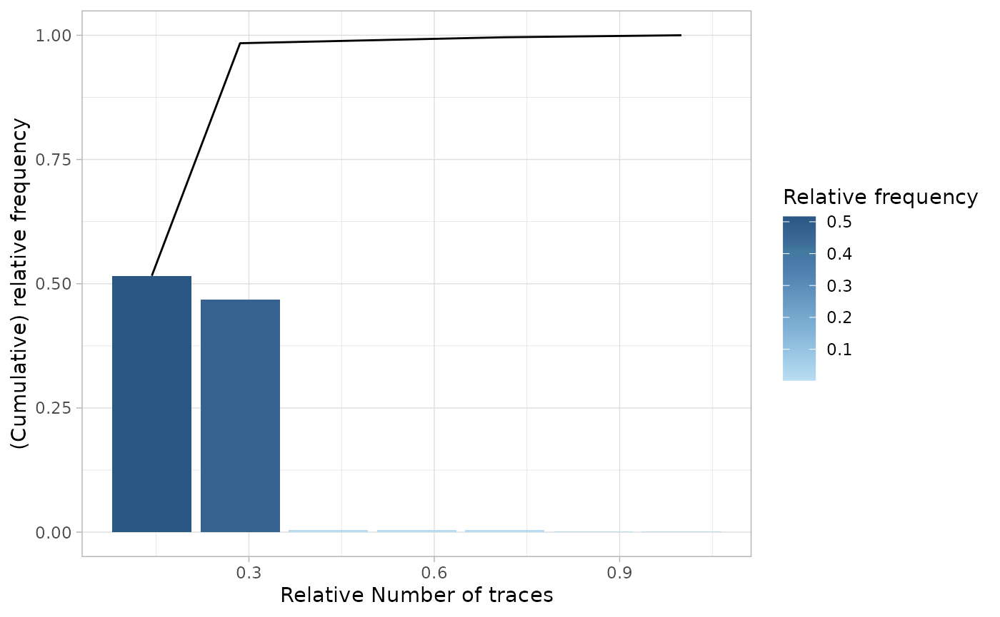
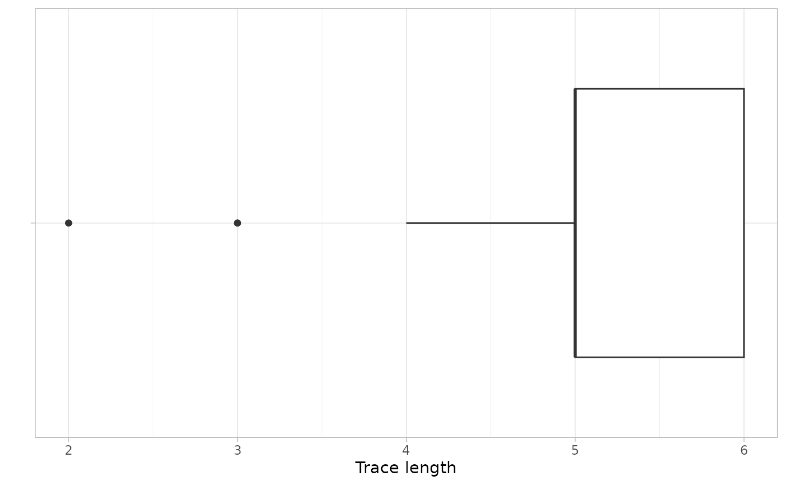

The metrics for exploring and describing event data which are available are based on literature in the field of operational excellence and are organized in the following (sub)categories
- Time perspective
- Organizational perspective
- Structuredness perspective
- Variance
- Rework
Time perspective
Idle Time
The idle time is the time that there is no activity in a case or for a resource. It can only be calculated when there are both start and end timestamps available for activity instances. It can be computed at the levels trace, resource, case and log, and using different time units.
## # A tibble: 7 × 2
## employee idle_time
## <fct> <drtn>
## 1 r7 464.4199 days
## 2 r1 450.2124 days
## 3 r4 442.6260 days
## 4 r5 430.1764 days
## 5 r3 429.1064 days
## 6 r6 425.5362 days
## 7 r2 214.7436 daysThe output of all metrics in edeaR can be visualized by supplying it to the plot function.

Processing Time
The processing time can be computed at the levels log, trace, case, activity and resource-activity. It can only be calculated when there are both start and end timestamps available for activity instances.
patients %>%
processing_time("activity") %>%
plot
Throughput Time
The throughput time is the time form the very first event to the last event of a case. The levels at which it can be computed are log, trace, or case.
patients %>%
throughput_time("log") %>%
plot()
Organizational Perspective
Resource Frequency
The resource frequency metric allows the computation of the number/frequency of resources at the levels of log, case, activity, resource, and resource-activity.
patients %>%
resource_frequency("resource")## # A tibble: 7 × 3
## employee absolute relative
## <fct> <int> <dbl>
## 1 r1 500 0.184
## 2 r2 500 0.184
## 3 r6 495 0.182
## 4 r7 492 0.181
## 5 r5 261 0.0959
## 6 r3 237 0.0871
## 7 r4 236 0.0867Resource Involvement
Resource involvement refers to the notion of the number of cases in which a resource is involved. It can be computed at levels case, resource, and resource-activity.
patients %>%
resource_involvement("resource") %>% plot It this example it shows that only r1 and r2 are involved in all cases, r6 and r7 are involved in most of the cases, while the others are only involved in half of the cases, more or less.
Resource Specialization
The resource specalization metric shows whether resources are specialized in certain activities or not. It can be calculated at the levels log, case, resource and activity.
patients %>%
resource_specialisation("resource")## # A tibble: 7 × 3
## employee absolute relative
## <fct> <int> <dbl>
## 1 r1 1 0.143
## 2 r2 1 0.143
## 3 r3 1 0.143
## 4 r4 1 0.143
## 5 r5 1 0.143
## 6 r6 1 0.143
## 7 r7 1 0.143In the simple patients event log, each resource is performing exactly one activity, and is therefore 100% specialized.
Structuredness
Variance
Activity Presence
Activity presence shows in what percentage of cases an activity is present. It has no level-argument.
patients %>% activity_presence() %>%
plot
Activity Frequency
The frequency of activities can be calculated using the activity_frequency function, at the levels log, trace and activity.
patients %>%
activity_frequency("activity")## # A tibble: 7 × 3
## handling absolute relative
## <fct> <int> <dbl>
## 1 Registration 500 0.184
## 2 Triage and Assessment 500 0.184
## 3 Discuss Results 495 0.182
## 4 Check-out 492 0.181
## 5 X-Ray 261 0.0959
## 6 Blood test 237 0.0871
## 7 MRI SCAN 236 0.0867Start Activities
The start of cases can be described using the start_activities function. Available levels are activity, case, log, resource and resource activity.
patients %>%
start_activities("resource-activity")## # A tibble: 1 × 5
## employee handling absolute relative cum_sum
## <fct> <fct> <int> <dbl> <dbl>
## 1 r1 Registration 500 1 1This shows that in this event log, all cases are started with the Registration by resource r1.
End Activities
Conversely, the end_activities functions describes the end of cases, using the same levels: log, case, activity, resource and resource-activity.
patients %>%
end_activities("resource-activity")## # A tibble: 5 × 5
## employee handling absolute relative cum_sum
## <fct> <fct> <int> <dbl> <dbl>
## 1 r7 Check-out 492 0.984 0.984
## 2 r6 Discuss Results 3 0.006 0.99
## 3 r2 Triage and Assessment 2 0.004 0.994
## 4 r5 X-Ray 2 0.004 0.998
## 5 r3 Blood test 1 0.002 1In contract to the start of cases, the end of cases seems to differ more frequently, although it is mostly the Check-Out activity.
Trace Coverage
The trace coverage metric shows the relationship between the number of different activity sequences (i.e. traces) and the number of cases they cover.
patients %>%
trace_coverage("trace") %>%
plot()
In the patients log, there are only 7 different traces, and 2 of them cover nearly 100% of the event log.
Trace Length
The trace length metric describes the length of traces, i.e. the number of activity instances for each case. It can be computed at the levels case, trace and log.
patients %>%
trace_length("log") %>%
plot
It can be seen that in this simple event log, most cases have a trace length of 5 or 6, while a minority has a trace length lower than 5.